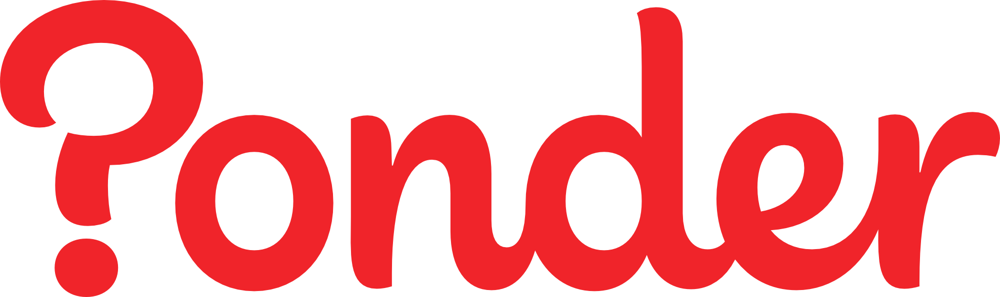
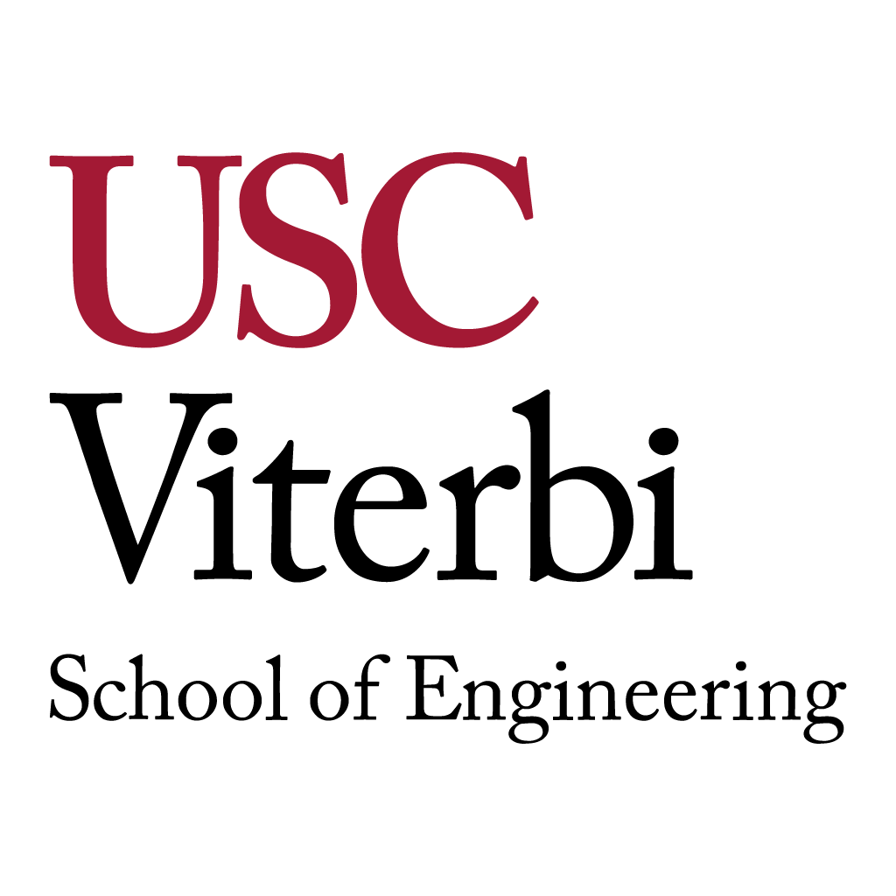
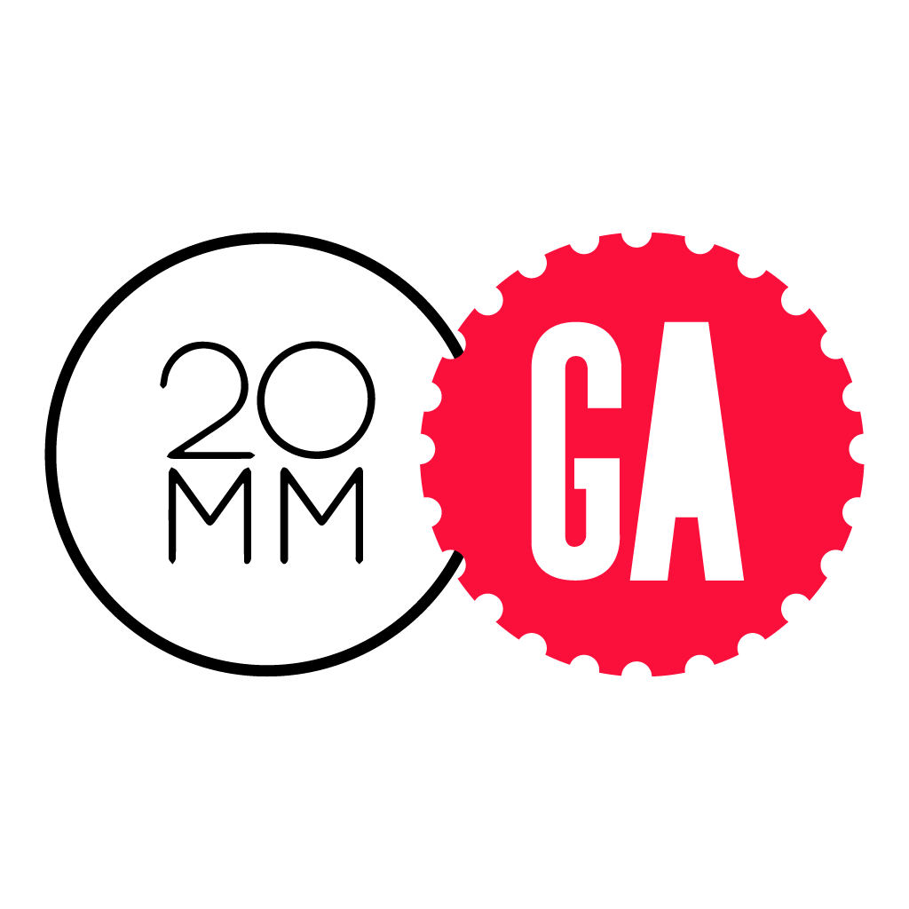

{
name: "Stephen Chen",
location: "Los Angeles, CA",
identity: ["designer", "developer", "musician", "foodie"],
links: ["GitHub", "LinkedIn", "SoundCloud", "resume.pdf"],
thoughts: ["@SCDevy", "Quora", "Yelp"],
email: "hello@stephenc.me"
}
name: "Stephen Chen",
location: "Los Angeles, CA",
identity: ["designer", "developer", "musician", "foodie"],
links: ["GitHub", "LinkedIn", "SoundCloud", "resume.pdf"],
thoughts: ["@SCDevy", "Quora", "Yelp"],
email: "hello@stephenc.me"
}
Stephen Chen. Designer. Developer.
Education
-
 University of Southern California2012-2017B.A. in Cognitive Science, Minor in Computer ScienceLos Angeles, CARelevant Coursework:
University of Southern California2012-2017B.A. in Cognitive Science, Minor in Computer ScienceLos Angeles, CARelevant Coursework:- Design Fundamentals
- Typography
- Human Computer Interface Design
- Cognitive Processes
- Symbolic Logic
- Fundamentals of Computer Programming
- Data Structures and Object Oriented Design
- Discrete Methods in Computer Science
- Principles of Software Developement
- Programming and Multimedia on the World Wide Web
- Language and Mind
Illustrator Photoshop InDesign HTML CSS JavaScript C++ Java PHP Research
Work Experience
-
PonderSpring 2015 - Summer 2015Founding Software Engineer, Product DesignerSanta Monica, CA
- Designed feature mockups and graphics for the iOS application, conducted live usability tests which helped inform several feature changes and also a major iteration on the core product. Developed a robust continuous delivery pipeline for the Ponder API, taking advantage of Docker, Ansible, Jenkins, and AWS services to build, ship, and then orchestrate code deployments.
Sketch Illustrator HTML CSS LESS JavaScript Python Flask PostgreSQL Docker Ansible Jenkins AWS Usability Testing -
USC Viterbi School of EngineeringFall 2014Teaching AssistantLos Angeles, CA
- Taught the fundamental technologies of web design and development (HTML5, CSS3, and JavaScript) to a class of 50 students. Aided the professor in course planning and the execution of course material inside the classroom.
HTML CSS JavaScript JQuery Teaching -
Sony Network Entertainment InternationalSummer 2014Software Development InternLos Angeles, CA
- Implemented a comprehensive redesign of the UI for a high-visibility internal tool; also refactored critical components of the web app in Backbone, resulting in significant performance improvements. Gained practical experience with agile software development methodology by working with a SCRUM team on a mission-critical project with complex requirements.
Illustrator HTML CSS JavaScript JQuery Backbone.js Java Swing JUnit MySQL Maven Selenium
Organizations
-
 Spark SCSpring 2014 - PresentCo-founder, Director of TechnologyLos Angeles, CA
Spark SCSpring 2014 - PresentCo-founder, Director of TechnologyLos Angeles, CA- Spark SC is the premiere student-led entrepreneurship and innovation initiative at the University of Southern California. Our mission is to inspire a culture of innovation, expose students to their creative potential, and connect makers across diverse communities.
Sketch Illustrator Photoshop HTML CSS LESS JavaScript Leadership Mentorship Operations Finance Fundraising Social Media -
TechLASpring 2014 - PresentManaging DirectorLos Angeles, CA
- TechLA connects top university talent with internships at startups – we’re passionate about helping students find great jobs in Los Angeles. To date, we’ve helped thousands of students find paid positions at hundreds of startups.
Sketch Illustrator Photoshop Leadership Operations Finance Fundraising Social Media Usability Testing
Volunteer Experience
-
 HackSC HackathonNovember 2014Web Development "HackSChool" MentorLos Angeles, CA
HackSC HackathonNovember 2014Web Development "HackSChool" MentorLos Angeles, CA- HackSC is a national hackathon hosted at the University of Southern California. The Web Development "HackSChool" was an introductory workshop designed to guide students through the process of building their first full stack web application.
HTML CSS JavaScript JQuery Python App Engine Mentorship -
20 Million Minds Foundation / General AssemblyOctober 2014Project #CodeTruck VolunteerLos Angeles, CA
- Project #CodeTruck offered introductory coding workshops and career exploration for young students at public school sites in LA. These workshops were delivered in a one-of-a-kind mobile classroom, equipped with Macbook Pros and high speed internet. Project #CodeTruck aimed to inspire students to embrace their entrepreneurial spirit and expose them to the endless possibilities in technology.
Code Literacy Hands-On Learning Education Mentorship -
 Two Bit CircusOctober 2014STEAM Carnival VolunteerLos Angeles, CA
Two Bit CircusOctober 2014STEAM Carnival VolunteerLos Angeles, CA- A modern take on the traveling circus, STEAM Carnival was an entertainment showcase using high-tech amusement and project-based kits to inspire kids of all ages about science, technology, engineering, art and math. STEAM Carnival leveraged kids’ passions for music, fashion, and games to expose them to STEAM (Science, Technology, Engineering, Arts, Math) disciplines.
Hands-On Learning Education Mentorship
Projects
-
Tommy TalksDeveloper and Designer · A platform for video content produced by the Tommy Talks student organization at the University of Southern California.Independent November 2014
-
SoundTableDeveloper and Designer · A unique visual and aural experience. Interact with strangers in a beautiful virtual space using a LeapMotion controller.HackGT September 2014
-
 TechLA InfographicDesigner · TechLA connects students with paid internships at startups in Los Angeles. It is run by Spark SC, in conjunction with our partners Upfront Ventures and Internships.com.Independent August 2014
TechLA InfographicDesigner · TechLA connects students with paid internships at startups in Los Angeles. It is run by Spark SC, in conjunction with our partners Upfront Ventures and Internships.com.Independent August 2014 -
KodeDeveloper · Kode lets finders of lost items connect with their owners, safely and securely. Enter a found Kode into the app and chat directly with an item's owner.Independent May 2014
-
AvocadoDeveloper and Designer · A predictive browsing experience. Avocado tracks your browsing habits, and intelligently recommends sites that you might like.HackTech January 2014
{kind=link}
{kind=link}
{kind=link}
{kind=link}